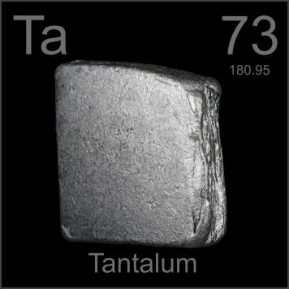

HOME
PREVIOUS
NEXT

Tantalum
Atomic Weight: 180.94788
Density: 16.65 g/cm3
Melting Point: 3017 °C
Boiling Point: 5458 °C
Tiny amounts of tantalum are used in the capacitors in all high tech devices. This slab would be enough for thousands of cell phones and laptop computers. It's also used for medical implants like skull plates.